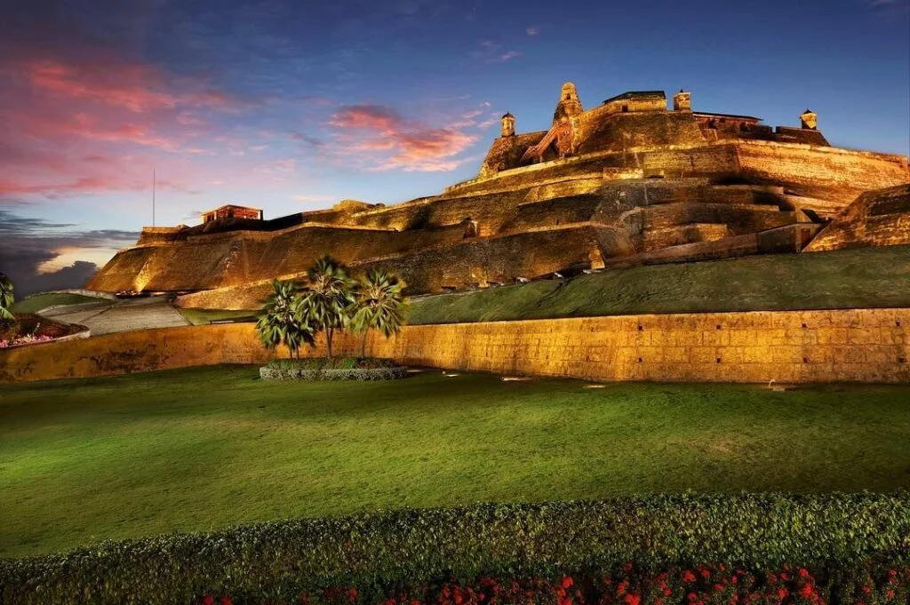
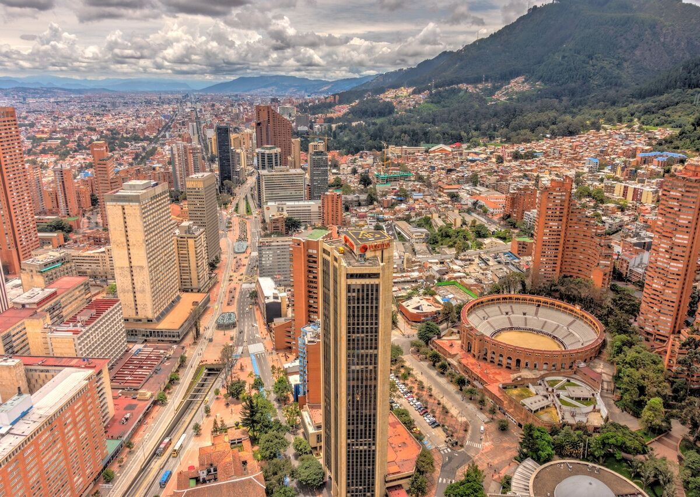
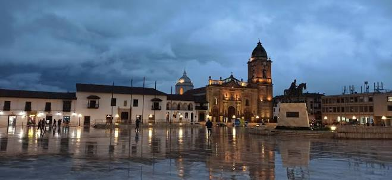
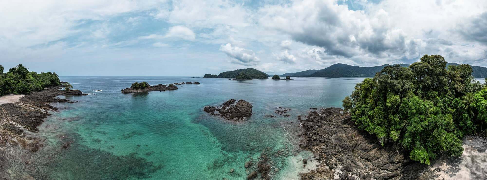
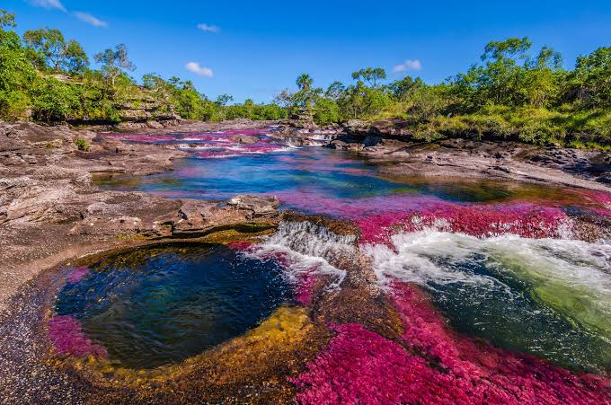
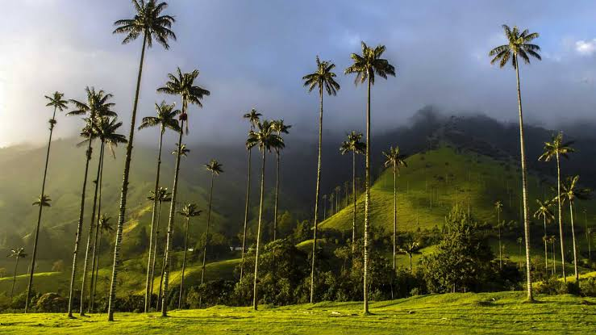
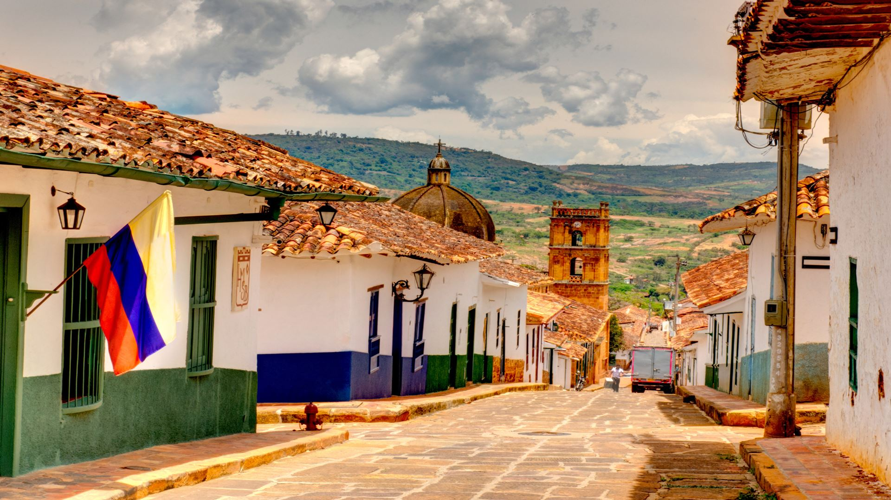
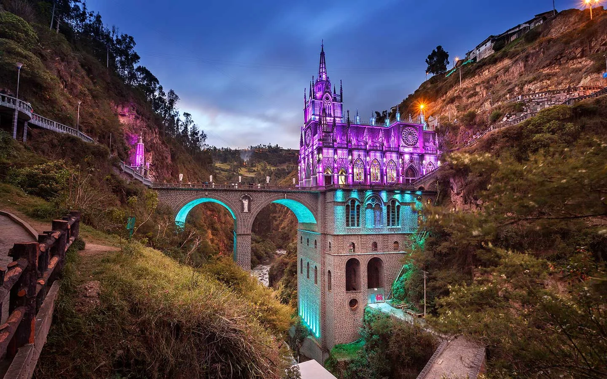

Destinos

Castillo de San Felipe de Barajas
Cartagena 🌊
- Ciudad Amurallada
- Bocagrande
- Torre del Reloj
- Zapatos Viejos
- India Catalina
- Coliseo
- Castillo de San Felipe
- Playa Blanca
- Islas del Rosario
- Volcán de Lodo El Totumo
- ¡ENTRE OTROS!

Bogotá, la capital a 2.600 metros
Bogotá 🏙️
- Monserrate
- La Candelaria
- Plaza de Bolívar
- Museo del Oro
- Museo Botero
- Usaquén
- Catedral de Sal (Zipaquirá)

Tunja, ciudad colonial de Boyacá
Tunja 🏛️
- Plaza de Bolívar
- Catedral Basílica Metropolitana
- Casa del Fundador Suárez Rendón
- Casa de Juan de Vargas
- Iglesia de Santo Domingo
- Puente de Boyacá (cerca)

Chocó, selva y mar del Pacífico
Chocó 🐋
- Nuquí
- Bahía Solano
- PNN Utría
- Avistamiento de ballenas
- Termales de Jurubidá
- Capurganá
- Sapzurro

Caño Cristales, el río de los cinco colores
Caño Cristales 🌈
- Río de los cinco colores
- La Macarena (Meta)
- PNN Serranía de La Macarena
- Macarenia clavigera
- Piscinas y cascadas naturales

Eje Cafetero, café y montañas
Eje Cafetero ☕
- Valle de Cocora
- Salento
- Filandia
- Parque Nacional del Café
- Termales de Santa Rosa de Cabal
- Manizales
- Paisaje Cultural Cafetero (UNESCO)

Barichara, pueblo de piedra en Santander
Barichara 🏘️
- Parque Principal
- Catedral de la Inmaculada Concepción
- Capilla de Santa Bárbara
- Camino Real a Guane
- Guane

Santuario de Las Lajas, Nariño
Santuario de Las Lajas ⛪
- Santuario de Las Lajas
- Cañón del río Guáitara
- Ipiales
- Puente de Rumichaca
- Cementerio de Ipiales